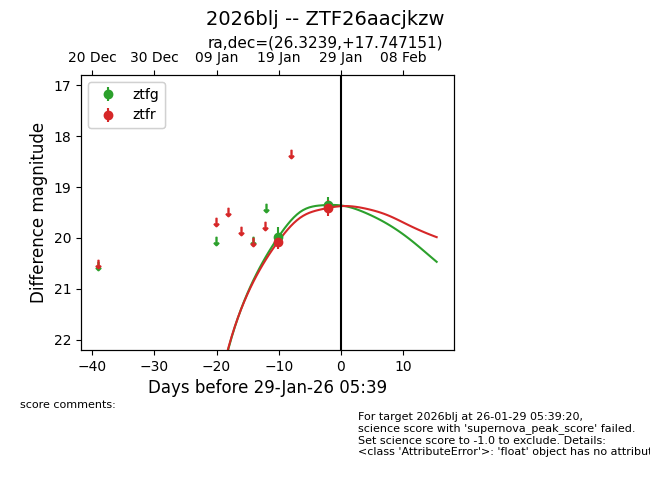
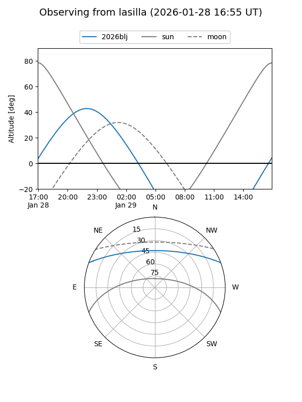
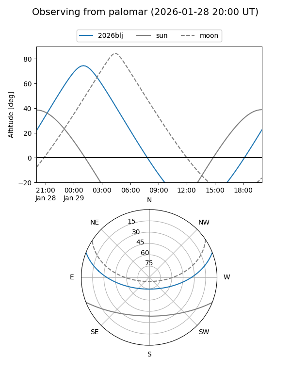

2026blj
Target 2026blj at 2026-01-27 06:06
Aliases and brokers:
FINK: link
Lasair: link
ALeRCE: link
TNS: link
YSE: link
alt names
ZTF26aacjkzw (ztf,fink_ztf)
2026blj (tns,yse)
Coordinates:
equatorial (ra, dec) = 26.3239,+17.74715
equatorial (HMS+DMS) = 01:45:17.73,+17:44:49.74
galactic (l, b) = (140.6615,-43.26278)
Flags:
Photometry:
last ztfg=19.35, ztfr=19.41
2 ztfg, 2 ztfr detections
Lightcurve

Visibility


Additional plots